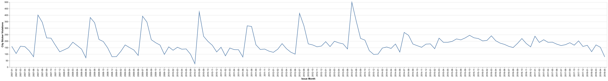
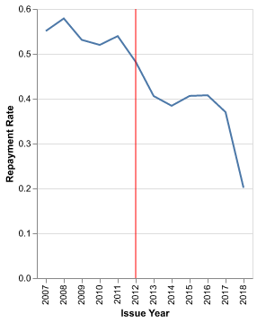
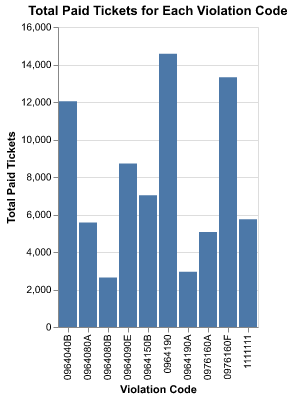
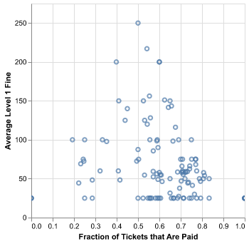
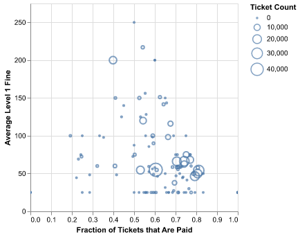
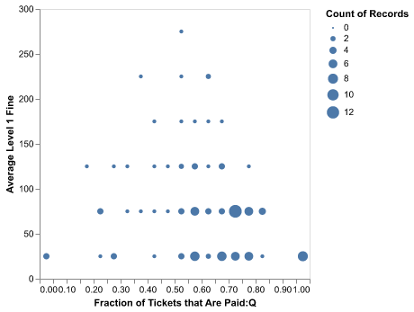
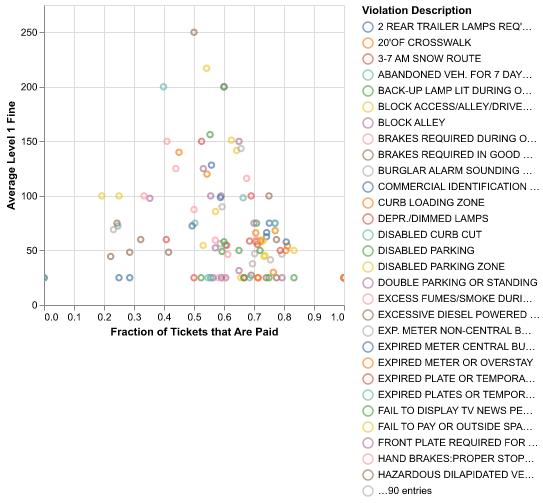
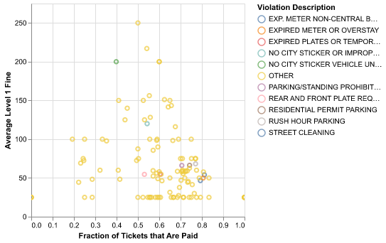
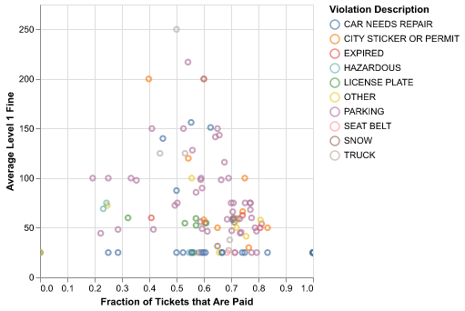

import pandas as pd
import altair as alt
import numpy as np
alt.renderers.enable("png")
import time
import warnings
warnings.filterwarnings('ignore')30538 Problem Set 2: Parking Tickets
- “This submission is my work alone and complies with the 30538 integrity policy.” Add your initials to indicate your agreement: EB
- “I have uploaded the names of anyone I worked with on the problem set here” EB (1 point)
- Late coins used this pset: 1 Late coins left after submission: 2
- Knit your
ps2.qmdto makeps2.pdf.- The PDF should not be more than 25 pages. Use
head()and re-size figures when appropriate.
- The PDF should not be more than 25 pages. Use
- Push
ps2.qmdandps2.pdfto your github repo. It is fine to use Github Desktop. - Submit
ps2.pdfvia Gradescope (4 points) - Tag your submission in Gradescope
Data cleaning continued (15 points)
- Read csv file
df = pd.read_csv('data/parking_tickets_one_percent.csv')#Function that creates a new dataframe with variables and NA Count
def na_function(df):
"""create a data frame with variables and NA count"""
count_na = pd.DataFrame({
'Variable': df.columns,
'NA': df.isna().sum()
})
return count_na#Testing out the function
##Creating test dataframe
test_df = pd.DataFrame({
'test1': [None, 1, 1, 1, 1],
'test2': [2, None, 2, None, 2],
'test3': [3, 3, None, None, None],
'test4': [4, 4, 4, 4, 4]
})
##testing the function on the test dataframe
testing_na = na_function(test_df)
print(testing_na) Variable NA
test1 test1 1
test2 test2 2
test3 test3 3
test4 test4 0#Using the function on the parking tickets data frame
parking_tickets_na = na_function(df)
print(parking_tickets_na) Variable NA
Unnamed: 0 Unnamed: 0 0
ticket_number ticket_number 0
issue_date issue_date 0
violation_location violation_location 0
license_plate_number license_plate_number 0
license_plate_state license_plate_state 97
license_plate_type license_plate_type 2054
zipcode zipcode 54115
violation_code violation_code 0
violation_description violation_description 0
unit unit 29
unit_description unit_description 0
vehicle_make vehicle_make 0
fine_level1_amount fine_level1_amount 0
fine_level2_amount fine_level2_amount 0
current_amount_due current_amount_due 0
total_payments total_payments 0
ticket_queue ticket_queue 0
ticket_queue_date ticket_queue_date 0
notice_level notice_level 84068
hearing_disposition hearing_disposition 259899
notice_number notice_number 0
officer officer 0
address address 0Referred to the following webpages: https://saturncloud.io/blog/how-to-count-nan-values-in-a-pandas-dataframe-column/ https://www.geeksforgeeks.org/different-ways-to-create-pandas-dataframe/ https://stackoverflow.com/questions/45579525/returning-a-dataframe-in-python-function
- notice_level, hearing_disposition, and zipcode are missing more often than others.
Notice level is missing often because if the field is blank no notice was sent. All the NAs indicate that no notice was sent.
While hearing disposition is not defined in the data dictionary, it may refer to whether there was a hearing disposition for the ticket, and the NAs may indicate that there wasn’t.
Zipcode refers to the ZIPcode associated with the vehicle registration, and if the ticket is associated to a lack of vehicle registration than there will be an NA there.
##Create a function that gives the corresponding value in the 'violation_code' column
##for any value in the 'violation_description' that contains the words "city sticker"
def city_sticker_function(df):
sticker_violation = df[df['violation_description'].str.contains('NO CITY STICKER')]
return sticker_violation['violation_code']
city_sticker_violation_codes = city_sticker_function(df).unique()
print(city_sticker_violation_codes)['0964125' '0976170' '0964125B' '0964125C']##check that each code pulled is for no city sticker
print(df['violation_description'].loc[df['violation_code'] == '0964125'].unique())
print(df['violation_description'].loc[df['violation_code'] == '0976170'].unique())
print(df['violation_description'].loc[df['violation_code'] == '0964125B'].unique())
print(df['violation_description'].loc[df['violation_code'] == '0964125C'].unique())['NO CITY STICKER OR IMPROPER DISPLAY']
['NO CITY STICKER OR IMPROPER DISPLAY']
['NO CITY STICKER VEHICLE UNDER/EQUAL TO 16,000 LBS.']
['NO CITY STICKER VEHICLE OVER 16,000 LBS.']The original violation code was 0964125 and the new violation code is 0976170. Violation codes also included 0964125B for no city sticker on vehicles under/equal to 16,000 lbs and 0964125C for no city sticker on vehicles over 16,000 lbs.
print(df['fine_level1_amount'].loc[df['violation_code'] == '0964125'].unique())[120]The cost of an initial offense for violation code 0964125 is $120
print(df['fine_level1_amount'].loc[df['violation_code'] == '0976170'].unique())[120]The cost of an initial offense for violation code 0976170 is $120
print(df['fine_level1_amount'].loc[df['violation_code'] == '0964125B'].unique())[200]The cost of an initial offense for violation code 0964125B is $200.
Revenue increase from “missing city sticker” tickets (20 Points)
#Create a new value for violation codes which combines the two city sticker violation codes.
df['violation_code'] = df['violation_code'].replace(
['0964125', '0976170', '0964125B'], '1111111')##Collapse the data to capture the number of missing city sticker tickets by month.
df['issue_date'] = pd.to_datetime(df['issue_date'])
filtered_df = df[df['violation_code'] == '1111111']
filtered_df['month'] = filtered_df['issue_date'].dt.to_period('M')
stickers_by_month = filtered_df.groupby('month')['violation_code'].count().reset_index()
stickers_by_month['month'] = stickers_by_month['month'].astype(str)##Use Altair to plot the number of tickets over time
sticker_violations_by_month_chart = alt.Chart(stickers_by_month).mark_line().encode(
alt.X('month:O', title='Issue Month'),
alt.Y('violation_code:Q', title='City Sticker Violations')
)
sticker_violations_by_month_chart
Referred to the following page: https://www.statology.org/pandas-group-by-month/
violations_2011 = df[(df['violation_code'] == '1111111') & (df['issue_date'].dt.year == 2011)]
violations_2011.shape[0]1935In this 1% sample of the data, there were 1935 sticker violation tickets in 2011, implying that there were roughly 193,500 total sticker violations. With an $80 increase in the ticket charge, the city would raise revenue by $15,480,000.
#calculate total number of no city sticker violations in 2011
violations_2011 = df[(df['violation_code'] == '1111111') & (df['issue_date'].dt.year == 2011)]
violations_2011.shape[0]1935#calculate paid number of no city sticker violations in 2011
violations_2011_unpaid = df[
(df['violation_code'] == '1111111') & (df['issue_date'].dt.year == 2011) & (df['ticket_queue'] == 'Paid')]
violations_2011_unpaid.shape[0]1044There were 1935 no sticker violation tickets issued in this sample set in 2011 and 1044 were paid, so there waas a repayment rate of 54%.
#calculate total number of no city sticker violations in 2012
violations_2012 = df[(df['violation_code'] == '1111111') & (df['issue_date'].dt.year == 2012)]
violations_2012.shape[0]2192#calculate paid number of no city sticker violations in 2012
violations_2012_unpaid = df[
(df['violation_code'] == '1111111') & (df['issue_date'].dt.year == 2012) & (df['ticket_queue'] == 'Paid')]
violations_2012_unpaid.shape[0]1057There were 2192 no sticker violation tickets issued in this sample set in 2012 and 1057 were paid, so there was a repayment rate decreased to 48%.
If the number of tickets issues was unchanged after the price increase and we only calculated changes based on the new and old repayment rates, the revenue in 2011 would be: 193,500 x 120 = 23,220,000 23,220,00 x 54% repayment rate = $12,538,800
And assuming the same number of tickets are issued in 2012, with the only changes being the price increasing and the repayment rate decreasing, the revenue in 2012 would be: 193,500 x 200 = 38,700,000 38,700,000 x 48% repayment rate = $18,576,000
The increase in revenue from 2011 to 2012 with raising the ticket cost to $200 and the repayment rate decreasing 4 percentage point would only be $6,037,200.
##Create a new column to find rate of paid ticket
filtered_df['paid'] = filtered_df['ticket_queue'].apply(lambda x: 1 if x == 'Paid' else 0)
##group by year
yearly_df = filtered_df.groupby(filtered_df['issue_date'].dt.year).agg(
repayment_rate=('paid', 'mean')).reset_index()
print(yearly_df) issue_date repayment_rate
0 2007 0.550859
1 2008 0.578852
2 2009 0.531134
3 2010 0.519879
4 2011 0.539535
5 2012 0.482208
6 2013 0.405921
7 2014 0.384198
8 2015 0.406161
9 2016 0.407686
10 2017 0.370124
11 2018 0.201449lines = alt.Chart(yearly_df).mark_line().encode(
alt.X('issue_date:N', title='Issue Year'),
alt.Y('repayment_rate:Q', title='Repayment Rate')
)
rules = alt.Chart(pd.DataFrame({
'Date': [2012]})
).mark_rule(color='red').encode(
alt.X('Date:O')
)
(lines + rules)
While the repayment rate was already on downward trajectory, with the introduction of the new policy in 2012 the repayment rate continued to delcine from approximately 52% in 2011 all the way down to approximately 20% in 2018.
##create a new column to calculate repayment rate
df['paid'] = df['ticket_queue'].apply(lambda x: 1 if x == 'Paid' else 0)##subset data to just pre-policy implemenation yeat
df_before_2012 = df[df['issue_date'].dt.year < 2012]##find the violation codes that are issued most often
df_before_2012['violation_code'].value_counts().head(10)violation_code
0976160F 21906
0964190 18117
0964040B 14740
0964090E 11452
1111111 10558
0964150B 9673
0976160A 8339
0964080A 7121
0964190A 3503
0964080B 3435
Name: count, dtype: int64##calculating repayment rate for violation code 0976160F
rate_1_test = df_before_2012[df_before_2012['violation_code'] == '0976160F']
print(rate_1_test['paid'].mean())0.6078699899570894##calculating total number of paid tickets for violation code 0976160F
rate_1_test['paid'].sum()np.int64(13316)Number of tickets given for violation code 0976160F: 21906
Repayment rate for violation code 0976160F: 61%
Number of tickets paid: 13316
rate_2_test = df_before_2012[df_before_2012['violation_code'] == '0964190']
print(rate_2_test['paid'].mean())0.8047690014903129rate_2_test['paid'].sum()np.int64(14580)Number of tickets given for violation code 0964190: 18117
Repayment rate for violation code 0976160F: 80%
Number of tickets paid: 14580
##filter the df to only contain the top 10 most frequently given tickets
top_10_tickets = [
'0976160F', '0964190', '0964040B', '0964090E', '1111111', '0964150B', '0976160A', '0964080A', '0964190A', '0964080B']
most_frequent_tickets_df = df_before_2012[
df_before_2012['violation_code'].isin(top_10_tickets)]
##group by 'violation_code' and sum the 'paid' column to get the total count of paid tickets
grouped_by_code_df = most_frequent_tickets_df.groupby(
'violation_code', as_index=False)['paid'].sum()##Create the bar chart in Altair
q_2_6_chart = alt.Chart(grouped_by_code_df).mark_bar().encode(
x=alt.X('violation_code:N', title='Violation Code'),
y=alt.Y('paid:Q', title='Total Paid Tickets'),
tooltip=['violation_code', 'paid']
).properties(
title="Total Paid Tickets for Each Violation Code"
)
q_2_6_chart
Based on the number of paid tickets by violation types before 2012, if the city raised the price for each ticket by the same amount (say by $80 as it was raised for the no city sticker violation) and wanted to raise the highest number of revenue, by looking at this chart we can see that they should increase the price of violation codes 0964190, 0976160F, and 0964040B.
Headlines and sub-messages (20 points)
##create new dataframe grouped by violation description and aggregated by other factors
q_3_1_df = df.groupby('violation_description').agg(
paid_tickets=('paid', 'mean'),
avg_level1_fine=('fine_level1_amount', 'mean'),
ticket_count=('ticket_number', 'count')
).reset_index()
##sort dataframe by ticket count
q_3_1_df = q_3_1_df.sort_values(by=['ticket_count'], ascending=False)print(q_3_1_df.head(5)) violation_description paid_tickets avg_level1_fine \
23 EXPIRED PLATES OR TEMPORARY REGISTRATION 0.604361 54.968869
101 STREET CLEANING 0.811612 54.004249
90 RESIDENTIAL PERMIT PARKING 0.742262 66.338302
19 EXP. METER NON-CENTRAL BUSINESS DISTRICT 0.792913 46.598058
81 PARKING/STANDING PROHIBITED ANYTIME 0.705817 66.142864
ticket_count
23 44811
101 28712
90 23683
19 20600
81 19753 Referred to the following pages: https://pandas.pydata.org/docs/reference/api/pandas.DataFrame.aggregate.html https://www.geeksforgeeks.org/how-to-sort-pandas-dataframe/
#filter the dataframe to only contain violations that appear at least 100 times
at_least_100_df = q_3_1_df[q_3_1_df['ticket_count'] >= 100]##make a scatterplot in Altair
chart_1 = alt.Chart(q_3_1_df).mark_point(clip=True).encode(
alt.X('paid_tickets', title='Fraction of Tickets that Are Paid'),
alt.Y('avg_level1_fine', title='Average Level 1 Fine').scale(domain=(0, 275))
)
chart_1
The main message one would take away from this plot is that there looks to be a normal distrubtion around the fraction of tickets that are paid in relation to the fine amount. There is slightly more crowding of the data between tickets are are paid 50-70% of the time and have a fine level of $25-$75.
chart_2 = alt.Chart(q_3_1_df).mark_point(clip=True).encode(
alt.X('paid_tickets', title='Fraction of Tickets that Are Paid'),
alt.Y('avg_level1_fine', title='Average Level 1 Fine').scale(domain=(0, 275)),
alt.Size('ticket_count:Q', title='Ticket Count')
)
chart_2
In addition to what we gathered from the last chart, in this chart we can also see that there is the highest count of tickets given out that are approximately $50-$60 and they are paid back around 50%-80% of the time.
chart_3 = alt.Chart(q_3_1_df).mark_circle(clip=True).encode(
alt.X('paid_tickets:Q', bin=alt.BinParams(maxbins=20),
title='Fraction of Tickets that Are Paid:Q'),
alt.Y('avg_level1_fine', bin=alt.BinParams(maxbins=20),
title='Average Level 1 Fine').scale(domain=(0, 300)),
alt.Size('count()')
)
chart_3
This chart simplifies the other charts and brings the eye to notice that tickets are most often paid back when they are $25-$75. It deemphasizes the fines that are $175 or more, as it appears in this chart that they are rarely given out.
Referred to the following: https://altair-viz.github.io/user_guide/customization.html
- I am going to bring the City Clerk the third chart because it simplifies the data the most and brings your attention to the fact that tickets are most often paid when they are $25-$75.
Understanding the structure of the data and summarizing it (Lecture 5, 20 Points)
q_4_df = df.groupby('violation_description').agg(
avg_level1_fine=('fine_level1_amount', 'mean'),
avg_level2_fine=('fine_level2_amount', 'mean'),
ticket_count=('ticket_number', 'count')
).reset_index()
##create a new column that shows if fines double in price if unpaid
q_4_df['does_it_double'] = q_4_df['avg_level2_fine'] / q_4_df['avg_level1_fine']##find the rows where the violaiton code does not double
print(q_4_df[(q_4_df['does_it_double'] < 2) & (q_4_df['ticket_count'] > 100)]) violation_description avg_level1_fine \
5 BLOCK ACCESS/ALLEY/DRIVEWAY/FIRELANE 141.592780
15 DISABLED PARKING ZONE 216.986234
42 NO CITY STICKER VEHICLE OVER 16,000 LBS. 500.000000
54 OBSTRUCTED OR IMPROPERLY TINTED WINDOWS 156.180812
62 PARK OR BLOCK ALLEY 150.000000
79 PARK/STAND ON BICYCLE PATH 143.432203
95 SMOKED/TINTED WINDOWS PARKED/STANDING 151.090159
avg_level2_fine ticket_count does_it_double
5 266.751108 1579 1.883932
15 358.308751 2034 1.651297
42 955.343511 131 1.910687
54 225.645756 271 1.444773
62 259.926829 2050 1.732846
79 278.601695 236 1.942393
95 209.516794 1697 1.386700 The following violations have at least 100 citations and do not double. Each increases by the following:
| Violation | Increase Amount |
|---|---|
| Block access/alley/driveway/firelane | 1.88 |
| Disabled parking zone | 1.65 |
| No city sticker vehicle over 16,000 lbs. | 1.91 |
| Obstructed or improperly tinted windows | 1.44 |
| Park or block alley | 1.73 |
| Park/stand on bicycle path | 1.94 |
| Smoked/tinted windows parked/standing | 1.39 |
Notice Level
flowchart LR
A[VIOL] --> B(Could be paid or unpaid)
C[DETR] --> B
D[SIEZ] --> E(Ticket not paid yet)
F[FINL] --> E
G[DLS] --> Eflowchart LR A[VIOL] --> B(Could be paid or unpaid) C[DETR] --> B D[SIEZ] --> E(Ticket not paid yet) F[FINL] --> E G[DLS] --> E
VIOL: Notice of violation is sent
SIEZ: The vehicle is now on the city’s boot list
DETR: hearing officer found vehicle owner liable for the citation
FINL: unpaid ticket was sent to collections
DLS: city intends to seek a license suspension
Ticket Queue
flowchart LR
A[PAID] --> B[No more action needed]
C[DISMESSED] --> B
D[BANKRUPTCY] --> B
E[HEARING REQ] --> F[Waiting for outcome to see if still need to pay]
G[COURT] --> F
H[NOTICE] --> I[Still need to pay ticket]
J[DEFINE] --> Iflowchart LR A[PAID] --> B[No more action needed] C[DISMESSED] --> B D[BANKRUPTCY] --> B E[HEARING REQ] --> F[Waiting for outcome to see if still need to pay] G[COURT] --> F H[NOTICE] --> I[Still need to pay ticket] J[DEFINE] --> I
PAID: The ticket was paid
DISMISSED: The ticket was dismissed
HEARING REQ: The ticket was contested and awaiting a hearing at the time the data was pulled
NOTICE: The ticket was not yet paid and the city sent a notice to the address on file for that vehicle
COURT: The ticket is involved in some sort of court case, not including bankruptcy
BANKRUPTCY: The ticket was unpaid and included as a debt in a consumer bankruptcy case
DEFINE: The city cannot identify the vehicle owner and collect on a debt
##original chart with messy legend
Final_chart = alt.Chart(q_3_1_df).mark_point(clip=True).encode(
alt.X('paid_tickets', title='Fraction of Tickets that Are Paid'),
alt.Y('avg_level1_fine', title='Average Level 1 Fine').scale(domain=(0, 275)),
alt.Color('violation_description:N', title='Violation Description')
)
Final_chart
##find the 'ticket_count' cutoff for the 10 most common
print(q_3_1_df.sort_values(by=['ticket_count'], ascending=False).head(11))
##dfine the function to categorize based on ticket_count
def categorize_violation(row):
if row['ticket_count'] > 10000:
return row['violation_description']
else:
return 'OTHER'
##apply the function to create the '10_most_common' column
q_3_1_df['10_most_common'] = q_3_1_df.apply(categorize_violation, axis=1) violation_description paid_tickets \
23 EXPIRED PLATES OR TEMPORARY REGISTRATION 0.604361
101 STREET CLEANING 0.811612
90 RESIDENTIAL PERMIT PARKING 0.742262
19 EXP. METER NON-CENTRAL BUSINESS DISTRICT 0.792913
81 PARKING/STANDING PROHIBITED ANYTIME 0.705817
21 EXPIRED METER OR OVERSTAY 0.806355
85 REAR AND FRONT PLATE REQUIRED 0.530482
43 NO CITY STICKER VEHICLE UNDER/EQUAL TO 16,000 ... 0.398357
91 RUSH HOUR PARKING 0.770414
41 NO CITY STICKER OR IMPROPER DISPLAY 0.543303
20 EXPIRED METER CENTRAL BUSINESS DISTRICT 0.741680
avg_level1_fine ticket_count
23 54.968869 44811
101 54.004249 28712
90 66.338302 23683
19 46.598058 20600
81 66.142864 19753
21 50.000000 18756
85 54.610525 15829
43 200.000000 14246
91 68.209779 11965
41 120.000000 10773
20 62.608361 9736 ##second chart with ten most commonly used violation descriptions
Final_chart_part_2 = alt.Chart(q_3_1_df).mark_point(clip=True).encode(
alt.X('paid_tickets', title='Fraction of Tickets that Are Paid'),
alt.Y('avg_level1_fine', title='Average Level 1 Fine').scale(domain=(0, 275)),
alt.Color('10_most_common:N', title='Violation Description')
)
Final_chart_part_2
#organize into categories
def categorize_violation_description(row):
description = row['violation_description']
if 'EXPIRED' in description:
return 'EXPIRED'
elif 'PLATE' in description:
return 'LICENSE PLATE'
elif 'SNOW' in description:
return 'SNOW'
elif 'SAFETY BELT' in description:
return 'SEAT BELT'
elif any(keyword in description for keyword in ['CITY STICKER', 'PERMIT', 'PLACARD', 'IDENTIFICATION']):
return 'CITY STICKER OR PERMIT'
elif any(keyword in description for keyword in ['TRUCK', 'DIESEL']):
return 'TRUCK'
elif any(keyword in description for keyword in ['HAZARDOUS', 'UNSAFE']):
return 'HAZARDOUS'
elif any(keyword in description for keyword in ['LAMP', 'REFLECTORS', 'LAMPS', 'LIGHTS', 'WINDOWS', 'BRAKES', 'EXCESS', 'REAR', 'LOAD', 'HORN', 'SIREN', 'ALARM' 'IMPROPER']):
return 'CAR NEEDS REPAIR'
elif any(keyword in description for keyword in ['PARK', 'OBSTRUCT', 'PARKING', 'ENTRANCE', 'BLOCK', 'WITHIN', 'CURB', 'UNDER', 'OUTSIDE', 'STREET', 'SPECIAL', 'METER']):
return 'PARKING'
else:
return 'OTHER'
# Apply the function to create the 'categories' column
q_3_1_df['categories'] = q_3_1_df.apply(categorize_violation_description, axis=1)##second chart with ten most commonly used violation descriptions
Final_chart_really = alt.Chart(q_3_1_df).mark_point(clip=True).encode(
alt.X('paid_tickets', title='Fraction of Tickets that Are Paid'),
alt.Y('avg_level1_fine', title='Average Level 1 Fine').scale(domain=(0, 275)),
alt.Color('categories:N', title='Violation Description')
)
Final_chart_really